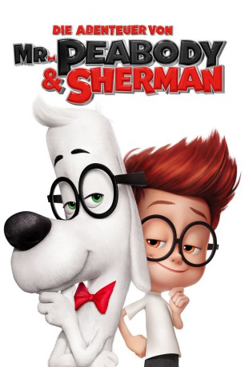

gesehen am 25.10.2015
gesehen am 25.10.2015Alternativ: Mr. Peabody & Sherman gesehen am 25.10.2015
 
 IMDB-Wertung: 6.8 / 10
IMDB-Wertung: 6.8 / 10  Metascore:
Metascore: 
Mr Peabody ist der intelligenteste Hund der Welt und somit vielleicht sogar schlauer als jeder Mensch. Der kleine Junge Sherman ist viel eher sein Haustier als andersherum. Als er verbotenerweise die Raum- und Zeitmaschine WABAC bedient, beginnen sich Ereignisse aus der Vergangenheit zu verändern und sich auf die Gegenwart auszuwirken. Nur Sherman und Mr Peabody können das Raum-Zeit-Kontinuum jetzt noch vor der Katastrophe retten.
Jahr: 2014
Dauer: 92 Minuten
FSK: 0
Land: USA Studio: 20th Century FoxTonspuren:
Untertitel: Deutsch, Englisch,
Auflösung: 720p (1280x696) Größe: 4147 MB
Genre: Animation/Trick, Abenteuer, Komödie, Familie, Sci-Fi
Regisseur: Rob Minkoff
Drehbuch: Jay Ward, Craig Wright, Robert Ben Garant, Thomas Lennon, Ted Key
Soundtrack: Danny Elfman
Darsteller:
 Ariel Winter als Penny Peterson
Ariel Winter als Penny Peterson Joshua Rush als Carl
Joshua Rush als Carl Stephen Tobolowsky als Principal Purdy
Stephen Tobolowsky als Principal Purdy Allison Janney als Ms. Grunion
Allison Janney als Ms. Grunion Dennis Haysbert als Judge
Dennis Haysbert als Judge Leslie Mann als Patty Peterson
Leslie Mann als Patty Peterson Stanley Tucci als Leonardo da Vinci
Stanley Tucci als Leonardo da Vinci Lake Bell als Mona Lisa
Lake Bell als Mona Lisa Patrick Warburton als Agamemnon
Patrick Warburton als Agamemnon Tom McGrath als Odysseus
Tom McGrath als Odysseus Mel Brooks als Albert Einstein
Mel Brooks als Albert Einstein Adam Alexi-Malle als French Peasant
Adam Alexi-Malle als French Peasant Nicholas Guest als French Peasant
Nicholas Guest als French Peasant Thomas Lennon als Italian Peasant #2
Thomas Lennon als Italian Peasant #2 Jess Harnell als Abraham Lincoln / George Washington / Bill Clinton / Isaac Newton / New York City Cop
Jess Harnell als Abraham Lincoln / George Washington / Bill Clinton / Isaac Newton / New York City Cop Ava Acres als Additional Voices
Ava Acres als Additional Voices Newell Alexander als Additional Voices
Newell Alexander als Additional Voices Rosemary Alexander als Additional Voices
Rosemary Alexander als Additional Voices Stephen Apostolina als Additional Voices
Stephen Apostolina als Additional Voices Mitch Carter als Additional Voices
Mitch Carter als Additional Voices David Cowgill als Additional Voices
David Cowgill als Additional Voices Hope Levy als Additional Voices
Hope Levy als Additional Voices Scott Menville als Additional Voices
Scott Menville als Additional Voices Jadon Sand als Additional Voices
Jadon Sand als Additional Voices Alan Shearman als Additional Voices
Alan Shearman als Additional Voices Lynnanne Zager als Additional Voices
Lynnanne Zager als Additional Voices David Zyler als Additional Voices
David Zyler als Additional VoicesDatei: X:\Kinder Filme (A-F)\Abenteuer von Mr. Peabody & Sherman, Die (2014, FSKo.Al., 1280x696).mkv seit 12.03.2015
Festplatte: Kinder-Filme+Trick
 Es gibt insgesamt 68 Filme in der Gruppe 'Kinder Filme (A-F)'
Es gibt insgesamt 68 Filme in der Gruppe 'Kinder Filme (A-F)'